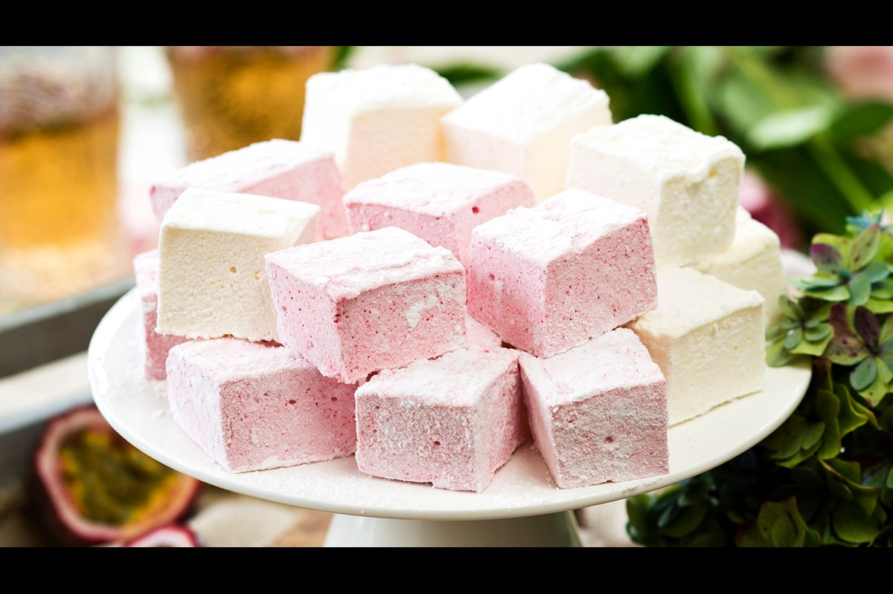

Сладости: полезное удовольствие или вкусный наркотик?
Введение

В настоящее время видов сладостей очень много, и детям без них жить практически невозможно, но все они по-разному влияют на организм. Поэтому выбор сладостей крайне важен. Особенно для тех, кто их ест часто. Правильный выбор сладостей может не подвергать организм риску заболеваний.
Что такое сладости?
Сладости-продукты с большим содержанием сахара.
Полезные свойства сахара
Сахар=энергия + гормон удовольствия-серотонин + улучшение работы мозга
Сахарный диабет
Сахарный диабет- эндокринное заболевание, обусловленное недостатком в организме гормона инсулина или его низкой биологической активностью.
Сахарный диабет бывает двух типов. Первый тип это инсулинозависимый, что означает недостаток собственного инсулина, и второй тип неинсулинозависимый, что означает нарушение взаимодействия инсулина с клетками тканей
Влияние сахара на зубы
Для того, чтобы сахариды (молекулы углеводов) были усвоены требуется участие вспомогательных веществ кальция и витамина В. Сахар - причина сжигания кальция. Если в продукте много быстрых углеводов (сахара), то источником веществ становится зубная эмаль.
Другие последствия сахара
- Ожирение
- Влияние на мозг
- Ухудшение состояния кожи
- Дистрофия тканей мышц и сердца
- Вымывание кальция
- Ослабевание имунной системы
Опасные добавки
Хочется отметить, что не все сладости даже при умеренном употреблении полезны. Виноваты опасные заменители натурального сахара. Опасные заменители натурального сахара: Е129, Е122, Е102, Е104, Е124, Е110.
Полезные сладости
- Мёд-богат витаминами и минералами, натуральный антибиотик
- Сухофрукты-богаты витаминами и клетчаткой
- Мармелад натуральный-в составе: желатин – полезен для волос и мышц, пектин – полезен для желудка и кишечника
- Пастила, зефир-в составе: пектин – полезен для желудка и кишечника, выводит токсины 
- Шоколад-только черный (больше 75% какао), заряжает энергией, укрепляет сосуды, сердце
- Халва-богата полезными жирами, кальцием, железом, калием


Сравнение исследуемых сладостей
Сладости в таблице выбраны путем двух опросов пятиклассников.
- Шоколад «Алёнка» (без добавок)
- Печенье «Юбилейное» (традиционное)
- Торт «Прага» (Производитель «У Палыча»)
Потребность в пищевых веществах и энергии обучающихся общеобразовательных учреждений в возрасте 11 лет и старше
- Количество белка=90 грамм
- Количество жиров=92 грамма
- Количество углеводов=383 грамм
- Энергетическая ценность=2713 килокалорий
Таблица
Для наглядности сравним калорийность исследуемых сладостей с яблоками
100 грамм шоколада «Алёнка» (без добавок) = 8 целым и примерно 1 четверти яблок
(вес 1 яблока =150 грамм, калорийность 1 яблока=66 килокалорий)


100 грамм печенья «Юбилейное» (традиционное) = 6 целым и половине с небольшим яблок
(вес 1 яблока=150 грамм, калорийность 1 яблока=66 килокалорий)
100 грамм (небольшой кусочек) торта «Прага» («У Палыча») 7 целым и 3 четвертям с небольшим яблок
(вес 1 яблока=150 грамм, калорийность 1 яблока=66 килокалорий)

Так есть сладкое или нет?
Сладкое может быть не только вредным, но и очень полезным для организма. Главное-употреблять в умеренных количестах и правильно выборать сладости, приготовленные из натуральных продуктов.